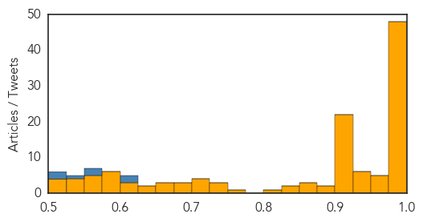

MERS
30-Day Web Trend
12 alerts, 2 warnings

30-Day Twitter Trend
8 alerts, 0 warnings

Article Locations

Article Confidences

Top Articles:
- 1.000
- MERS Outbreak Spreads in South Korea
- 1.000
- South Korean MERS outbreak likely to spread, health officials say
- 1.000
- What is Middle East Respiratory Syndrome and what are the symptoms?
- 1.000
- MERS Outbreak Spreads in South Korea
- 1.000
- MERS kills two in South Korea and 30 people infected
- 1.000
- South Korea confirms first MERS deaths, 25 people diagnosed with virus
- 1.000
- MOPH affirms Thailand free of 2012 Corona virus patient
- 1.000
- South Korea reports first MERS deaths to growing public alarm
- 0.999
- Middle East respiratory syndrome coronavirus (MERS-CoV) in the Republic of Korea
- 0.999
- Health staff to watch for MERS-CoV infections
- 0.999
- South Korea confirms two MERS deaths
- 0.999
- South Korea Sees First 2 Deaths from Respiratory Illness
- 0.999
- Outbreak In South Korea Raises Fears Of Transmission To America, But Officials Say Risk Is Low
- 0.999
- Vietnam faces risk of infecting, spreading MERS: official
- 0.999
- MERS Virus Kills 2 in South Korea as Infections Rise to 25
- 0.999
- South Korea reports its first 2 deaths from MERS virus
- 0.999
- Vietnam faces risk of infecting, spreading MERS: official - Xinhua
- 0.999
- S Korea reports its first 2 deaths from MERS virus - Schools cancel classes, public alarm over MERS - Kuwait Times
- 0.999
- South Korea reports 2 deaths from MERS; health officials try to contain outbreak
- 0.999
- Asia Unbound Does MERS Pose a Serious Threat to China?
- 0.998
- More than 680 in South Korea isolated over MERS virus fears
- 0.998
- China Hospital Ballot to Decide Who Treats Mers Patient
- 0.998
- South Korea confirms first 2 MERS deaths
- 0.998
- Four suspected cases test negative for MERS-CoV
- 0.997
- South Korea reports its first 2 deaths from MERS virus
- 0.997
- MERS Scare Wreaks Havoc On Travel Plans To And From South Korea
- 0.997
- 2 deaths as MERS infections rise to 25
- 0.997
- More than 680 in South Korea isolated over MERS virus fears
- 0.997
- domain-b.com : S Korea reports two MERS deaths
- 0.997
- South Korea reports its first 2 deaths from MERS virus
- 0.997
- S.Korea Fights to Contain MERS Outbreak, Considers Tough Measures
- 0.996
- S.Korea reports first MERS deaths
- 0.996
- S Korea reports first two deaths from MERS
- 0.996
- South Korea Fighting MERS Outbreak, Tough Measures Considered
- 0.996
- UPDATE 4-S.Korea reports first two deaths from MERS respiratory illness
- 0.996
- South Korea reports first two MERS deaths
- 0.996
- Two have died of MERS in South Korea
- 0.996
- South Korea reports first two deaths from MERS respiratory illness
- 0.996
- South Korea reports first two deaths from MERS respiratory illness
- 0.996
- South Korea has first two Mers deaths
- 0.995
- Canada's SARS outbreak helped prepare us for MERS, doc says
- 0.995
- South Korea reports first MERS deaths as camels in Seoul zoo isolated
- 0.995
- South Korea reports first two deaths from MERS respiratory illness
- 0.993
- South Korea to stop suspected ...｜Society｜WCT
- 0.993
- Korean MERS total surges to 25 cases, 2 deaths
- 0.992
- South Korea reports first two deaths from Mers; some tour groups cancel trips, East Asia News & Top Stories
- 0.992
- Nurses cast ballot to decide who will treat Mers patient
- 0.992
- China's health department steps up precaution against MERS - Xinhua
- 0.992
- Condition of China's first MERS patient tends to worsen
- 0.987
- China's health department steps up precaution against MERS
Showing top 50 articles...
Top Tweets:
- 0.889
- MERS-CoV is actually completely different from ebola and it's only infecting a few people in a hospital. It's NOT "going around."
Unknown
30-Day Web Trend
0 alerts, 0 warnings

30-Day Twitter Trend
2 alerts, 0 warnings

Article Locations

Article Confidences
Top Articles:
- 1.000
- S. Korea announces first two MERS deaths
- 1.000
- Malaysia General Business Sports and Lifestyle News
- 1.000
- S.Korea announces first two MERS deaths
- 1.000
- S.Korea announces first two MERS deaths: Ministry
- 1.000
- The World On Arirang
- 1.000
- South Korea announces first two MERS deaths: ministry
- 1.000
- 2 MERS patients die in South Korea
- 0.999
- South Korea announces first two Mers deaths: Yonhap, East Asia News & Top Stories
- 0.999
- South Korea announces first two MERS deaths
- 0.999
- South Korea reports first two deaths from MERS
- 0.999
- Asia MERS Outbreak Alarms Authorities
- 0.999
- Two Die in South Korea After Contracting MERS
- 0.999
- S Korea announces first two MERS deaths
- 0.999
- S.Korea announces first two MERS deaths—Yonhap
- 0.999
- (2nd LD) South Korea reports first two MERS-related deaths
- 0.998
- South Korea reports first MERS deaths to growing alarm
- 0.998
- the edge of knowledge
- 0.998
- S. Korea Reports first MERS Deaths to Growing Alarm — Naharnet
- 0.998
- No Cure, Vaccine Yet For Mers Virus Scare In South Korea, Hong Kong Fears Infection, As Well
- 0.998
- South Korea reports first MERS deaths
- 0.998
- The World On Arirang
- 0.997
- Hundreds of Chinese cancel travel plan to S. Korea on MERS fears
- 0.997
- Two catch MERS via a new route-INSIDE Korea JoongAng Daily
- 0.997
- (3rd LD) S. Korea reports first two deaths from MERS
- 0.996
- Scare causes schools to close
- 0.996
- Fear of a deadly virus has forced a Chinese hospital to assign nurses by lottery
- 0.996
- Hundreds of Chinese cancel travel plan to S. Korea on MERS fears
- 0.995
- S. Korea reports first two deaths from Mers; around 750 quarantined
- 0.995
- [Editorial] MERS claims lives
- 0.995
- Hundreds of Chinese cancel travel plan to S. Korea on MERS fears
- 0.994
- Kenya : China confirms '77 people had contact with MERS patient'
- 0.993
- Two MERS deaths in South Korea
- 0.993
- Thai Health Ministry takes precautions against MERS
- 0.993
- (2nd LD) Schools cancel classes over MERS woes
- 0.992
- 2 killed by MERS, 30 cases confirmed
- 0.992
- Citizens react cautiously after two die from MERS-INSIDE Korea JoongAng Daily
- 0.990
- HK tightens MERS watch after Korean came away undetected
- 0.990
- South Korea reports five more cases of MERS illness
- 0.990
- Schools consider hiatus over MERS woes
- 0.990
- S. Korea Promises More Active Measures to Contain MERS Spread
- 0.988
- Two MERS patients died-INSIDE Korea JoongAng Daily
- 0.987
- KUNA : S. Korea announces first two deaths from MERS
- 0.985
- S Korea reports first two deaths from MERS respiratory illness[1]- Chinadaily.com.cn
- 0.984
- Hundreds isolated in S. Korea
- 0.984
- New MERs Outbreak Causes Fear Amongst Traveller
- 0.982
- South Korea reports two deaths in MERS outbreak
- 0.979
- 680 people in isolation in South Korea - Emirates 24
- 0.979
- KBS World Radio
- 0.975
- Experts claim new MERS cure
- 0.967
- KBS World Radio
Showing top 50 articles...
Top Tweets:
- 0.621
- RT: The rapid rise in MERS cases in SKorea was spooking me. So I asked some experts about the outbreak. spookednomore htt…
- 0.617
- The occurrence of such a large MERS outbreak outside the Middle East is a new dvlpmnt as is exportation of the disease to a third country
- 0.575
- RT: Vietnam steps up health screening of tourists after 2 MERS deaths in S.Korea. @WHO http://t.…
- 0.560
- that the outbreak in Korea is any different from any hospital-related outbreak anywhere else. 3/4
- 0.529
- The Ministry of Health of SouthKorea has further reported that two recently confirmed cases represent a third generation of transmission
- 0.509
- Possibly all MERS cases contracted in Korea are due to patient 1.The $20k Qs r whether there will be any tertiary cases & if so how many.
- 0.504
- RT: One good thing in SouthKorea MERS outbreak: we can stop obsessing w/camels & concentrate on hospital transmission htt…